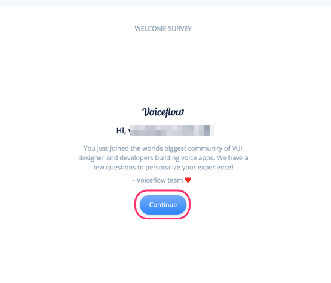
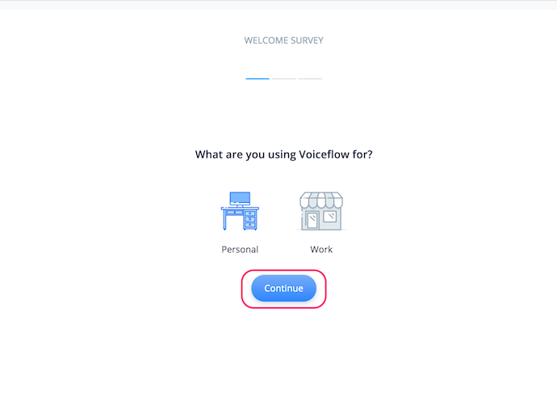
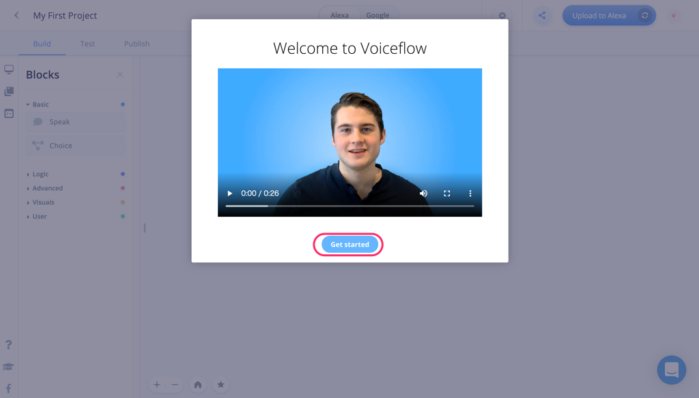
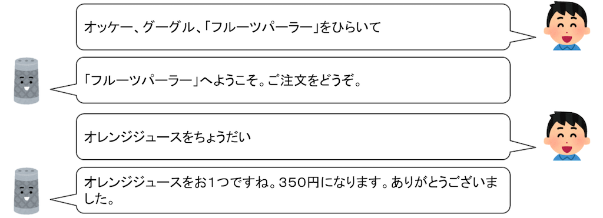

はじめに

Voiceflowを使った、ノンコーディングで始めるGoogle Home向けアクション開発のハンズオン資料です。
想定するターゲット
- スマートスピーカーアプリ開発に興味のある方
- Google Homeをお持ちの方
- プログラミングをやったことがない方
- とりあえず始めてみたい方
注意
更新履歴
- 2019/09/07 初版
必要なもの
以下を事前に準備しておいてください。
gmailアカウント
以下で使用します。事前に準備しておいてください。
- Voiceflowへのログイン
- Actions on Google / Dialogflow / Google Cloud Platformへのログイン
- Googleスプレッドシートへのログイン
では始めましょう！
Voiceflowアカウントの作成
https://voiceflow.com/にアクセスします。Voiceflowアカウントを持っていない方は、"Sign up free"をクリックしてアカウントを作成しましょう。
※すでにアカウントを持っている方は、これ以降の作業は不要です。"Sign in"をクリックしてログインし、次の章に進みましょう。

"Sign up with Google" をクリックします。

gmailのログイン画面が出てきたらログインします。

登録後にかんたんなアンケートがありますので、順に答えていきましょう。なお、どれを選択したとしてもVoiceflowの利用に影響はありませんので安心してください。"Continue"をクリックして進めます。

Voiceflowを使う目的（個人利用か、仕事か）を聞いてくるので、適当に選んでください。選んだら、"Continue"をクリックします。

Voiceflowをどういうふうに使うのか（デザインやプロトタイピング、開発やリリース）を聞いてくるので、適当に選んでください。選んだら、"Continue"をクリックします。

プログラミング経験があるか？を聞いてくるので、適当に選んでください。（経験なし、少しだけ経験あり、経験豊富）。選んだら、"Complete"をクリックします。

以下の画面が出てきたらログイン完了です！ちなみに動画の方はVoiceflowのCEOであるBradenさんです。"Get started"をクリックします。

"My First Project" という最初のプロジェクトが開いた状態になっていますが、これは使いません。左上の"＜"をクリックします。

プロジェクトの一覧画面が表示されます。Voiceflowでは、AlexaスキルやGoogle Homeアクションを「プロジェクト」という単位で管理します。右の列にあるのがさっき開いていた、アカウント作成と同時に最初に自動作成される「My First Project」ですね。左の列にはサンプルのプロジェクトが並んでいます。
このハンズオンでは、この一覧画面でプロジェクトの新規作成から行いますので、これらのプロジェクトはすべて使用しません。プロジェクトを作成するとこの画面に一覧表示される、と思ってもらえればよいです。

これで準備が整いました。いよいよ次の章からGoogle Home向けのアクションを作っていきます！
おまけ：右下のアイコンは何？
ところで、右下にあるこのアイコン、ずっと表示されていますけど、気になりますね。クリックするとどうなるでしょうか？

下からメニューが表示されました。これがVoiceflowのヘルプツールです。チャットサポートに問い合わせしたり、ドキュメントを検索したり、Voiceflowの稼働状況などを知ることができます。わからないこととかはここから問い合わせり調べればいいというわけですね。ただし英語です・・・

今回作成するサンプルアクションについて
今回サンプルで作成するアクションの動作イメージは以下のようなものです。

別の動作イメージです。
プロジェクトの新規作成
では早速プロジェクトを作っていきましょう。"Default List" の下にある"Create Project"をクリックします。

新規プロジェクトの作成画面が開きます。以下を入力します。
項目 | 入力内容 |
Enter your project name | プロジェクト名を入れます。"フルーツパーラー"と入力します。 |
Select Region | 言語を選択します。"Japanese(JP)"にチェックを入れて、"English(US)"のチェックを外します。 |
入力したら、"Create Project"をクリックします。

以下の画面が表示されればOKです。

画面の構成
最初に画面の構成について説明します。

項目 | 入力内容 |
Blocksメニュー | 機能ごとに分けられたBlockが並んでいます。使いたいBlockをここから選びます。 |
Canvas（キャンバス） | Blocksメニューから選んだBlockをここに配置し、線でつなげていくことで会話フローを作っていきます。 |
Home Block | 最初から用意されているのがブロックです。ここから会話フローがスタートし、他のBlockにつなげていきます。なお、Home Blockは削除することはできません。 |
アップロードボタン | 作成したプロジェクトをAlexa／Google Homeそれぞれのプラットフォームにアップロードします。アップロードすることでAmazon EchoやGoogle Homeなどのスマートスピーカデバイスから利用可能となります。 |
Alexa/Google切り替えスイッチ | 作成したプロジェクトをAlexa向け／Google Home向けに切り替えます。デフォルトはAlexaになっています。 |
メニュー切り替え | メニューの切り替えを行います。選択できるメニューには、Blocksメニュー/Flowsメニュー/Variablesメニューがあります。ハンズオンの後半で説明します。 |
細かいことは実際に使いながら覚えていきましょう。
AlexaからGoogleへの切り替え
プロジェクト新規作成直後は、Alexa向けがデフォルトになっています。今回はGoogle Home向けのプロジェクトなので、最初にAlexaからGoogleに切り替えを行います。
中央の一番上にあるAlexa/Google切り替えスイッチをクリックしてください。

スイッチがGoogleにかわり、右のアップロードボタンが "Upload to Alexa" から "Upload to Google" に変わればOKです。

言語の設定
プロジェクト新規作成時に設定した言語はAlexa向けのものとなっていますので、Google Home向けにも、別途言語設定を行います。左上のプロジェクト名の少し下にある"Publish"をクリックします。
言語設定画面が開きます。デフォルトでは、"English(En)"が選択されていますので、"Japanese(Ja)"をクリックします。

"Japanese(Ja)"に切り替わりました。これで言語設定は完了です。左上の"Build"をクリックしてCanvas画面に戻ります。

ブロックの配置
では早速やっていきましょう。最初にGoogle Homeから話をさせてみましょう。Google Homeから話をさせるにはSpeak Blockを使います。左のBlockメニューからSpeak Blockをドラッグ＆ドロップで以下のように配置してください。
右のテキストボックスにGoogle Homeに話させる文章を入力します。ここでは「フルーツパーラーへようこそ。ご注文をどうぞ。」と入力してください。

Home BlockのStartの右端のグレーの四角からドラッグすると線がひけますので、今配置したSpeak Blockの左橋のグレーの四角につなげます。

これで会話フローが繋がりました。このように様々なBlockを並べて、Blockの設定をして、線で順につなげていくことで会話フローを作るのがVoiceflowの基本操作になります。かんたんですね！
アップロードとGoogle Home向け連携設定（各プロジェクトの初回のみ）
では、早速アップロードして動作するかを確認してみましょう。各プロジェクトの初回アップロード時だけはいろいろ設定の手間がかかるのですが、頑張ってついてきてください！
"Upload to Google"ボタンをクリックします。

Voiceflow から Actions on Google（Googleアシスタントの基本的な管理）へのアクセスに必要な認証トークンを取得します。"Login with Google" をクリックします。
Googleログイン画面が表示されますので、Voiceflowアカウントと同じGoogleアカウントを選択してログインしてください。

アクセス権の許可を求められるので「許可」をクリックします。

認証トークンが画面に表示されます。右端のコピーアイコンをクリックして、クリップボードにコピーします。

Voiceflowの画面に戻って、"Paste code here"に先程の認証トークンをペーストし、"Verify" をクリックします。
認証に成功すると、次に、Actions on GoogleとDialogFlow(Googleアシスタントの会話部分やバックエンド処理を行う部分、Actions on Googleから処理が渡される) との連携を行います。少しややこしいのですが、最初だけなので頑張りましょう！
"here" か "Setup tutorial" をクリックします。

VoiceflowのGoogle Home向けセットアップのチュートリアルが開きます。基本的にここに書いてある通りに実施していけばよいのですが、すべて英語で書いてあって辛いと思いますので、ここから日本語で説明していきます！

Actions on Google のURL、https://developers.google.com/actions/ にアクセスします。以下のような画面が表示されるはずです。

このとき、右上にログインしているgmailアカウントが表示されます。このアカウントが先程認証トークンを取得する際にログインしたアカウントと同じであることを確認してください。もし違うアカウントになっていれば、切り替えるか、ログインし直してください。

認証トークン取得に使用したgmailアカウントが選択されていることを確認したら、"GO TO ACTIONS CONSOLE"をクリックします。

Actions on Googleの管理画面、「Actions Console」が開きます。まず、Actions Consoleでプロジェクトを作成します。"New Project"をクリックします。

利用規約に同意するかを聞かれます。一番上は、規約に同意するか？なので必ず"Yes"を選択、Country of residence は "Japan" が選択されていることを確認してください。下の2つはお知らせやアンケートの送信に関する許諾なので、どっちでもよいです。同意してすすめるならば"Agree and continue"をクリックします。

新しいプロジェクトの作成画面が開きますので、以下の通り設定します。
項目 | 入力内容 |
project name | プロジェクト名を入れます。アルファベット、数字、一部の記号のみになります。日本語は入力できませんのでご注意ください。今回は"fruits-parlor"と入力します。 |
Choose a language for ・・・ | 言語を選択します。"Japanese"を選択します。 |
Choose your country or region | 国を選択します。"Japan"を選択します。 |
設定が終わったら、"Create Project"をクリックします。

次にプロジェクトのテンプレートを選択する画面が表示されます。VoiceflowでDialogFlowを使った会話アクションを作成する場合は、一番右下の"Conversational"をクリックします。

以下のような画面が表示されればActions on Google上でプロジェクト作成は完了しています。

ここからDialogFlowとの連携設定を行っていきます。"Build your Action"をクリックします。

"Build your Action"のメニューの中の"Add Actions"をクリックします。
"Add your first action"をクリックします。

作成するACTIONを選択する画面が出てきます。"Custom Intent"が選択されていることを確認し、"BUILD"をクリックします。

DialogFlowへのログイン画面が別タブで表示されます。先程まで使用してきたのと同じgmailアカウントを選択してログインします。

アクセス権の許可を求められますので「許可」をクリックします。
DialogFlowの利用規約が表示されます。"Country or territory"に"Japan"が選択されていることを確認したら、"Terms of Service"のチェックボックスにチェックを入れて、"Accept"をクリックします。（Email preferencesの2つのチェックボックスは、お知らせやアンケートに関する許諾なのでどちらでもかまいません。）

Dialogflowの画面が表示されます。
以下の点を「必ず」確認して下さい。
- Actions on Googleで設定したプロジェクト名が「自動」で設定されていること
- GOOGLE PROJECTのところに"Agent will be linked with 〜" という記載で、Actions on Googleで作成したプロジェクト名が表示されていること
上記が正しく設定されていれば、Actions on GoogleとDialogflowの連携が正しく設定されていますので、DEFAULT TIMEZONEが"Asia/Tokyo"となっていることを確認の上、DEFAULT LANGUAGE を "Japanese - ja"を選択して、"CREATE"をクリックします。
Dialogflowで正しくアクションが作成されると以下のようになります。左上のプロジェクト名の横にある、歯車アイコンをクリックしてください。
設定画面が表示されるので、"Service Account" に記載されているアカウントのリンクをクリックします。ここからはGoogle Cloud Platformでの操作となります。

Google Cloud Platformに初めてログインされる場合は、利用規約への同意を求められますので、利用規約への同意にチェックを入れ、居住国に「日本」が選択されていることを確認の上、「同意して続行」をクリックします。

Google Cloud Platformの「IAMと管理」という管理画面が表示されたら、真ん中上部にある「＋ サービスアカウントを作成」をクリックします。

「サービスアカウント名」に"Voiceflow Creator Tool"と入力し、「作成」をクリックします。

次に「サービスアカウントの権限」を設定します。「役割を選択」をクリックして・・・

出てきたメニューの一番上で"Dialog"と入力すると表示される「Dialogflow API管理者」を選択します。

"続行"をクリックします。
以下の画面が表示されますので、「キーの作成」をクリックします、

キー作成メニューが表示されるので、キーのタイプは「JSON」を選択して、「作成」をクリックします。

キーファイルがダウンロードされます。これがVoiceflowとの連携に必要です。
サービスアカウント作成画面の一番下の「完了」をクリックします。

Voiceflowに戻り、先程取得したキーファイルをドラッグ＆ドロップでアップロードします。

"Successfully Uploaded" と表示されていればキーファイルが正しくアップロードされています。これでVoiceflowとGoogleの連携は完了です。ほんと、お疲れさまでした！
テスト
では、いよいよアクションをアップロードして、Google側でテストします。"Upload"をクリックします。
アップロードが行われます。100%になるまで待ちます。
"Action Upload Successful"と表示されれば、アップロードは完了しています！ "Google Action Simulator" をクリックします。

別のタブでGoogleのシミュレータが起動します。初回起動時は以下のような画面が表示されますので、"VERSION - Draft"が選択されていることを確認して、"Done"をクリックします。

これがGoogleのシミュレータです。左が会話をテストするためのシミュレータになっていて、右側は、シミュレータの結果の詳細（スマホのGoogleアシスタントやNest Hubなど画面表示が可能なデバイスの場合の画面表示や、実際に行われているリクエストやレスポンスなど）を表示する場所になっています。

ではテストを行ってみましょう。左のシミュレータの一番下に、会話内容を入力するか、マイクをクリックして実際に発話することでテストが行なえます。
すでにアクションを起動するための発話が入力されているので、そのままENTERを押すか、マイクをクリックして実際にアクションを起動してみてください。

最初にSpeak Blockに設定した文章が音声が流れましたか？画面の方にも同じ内容が表示されていればテストは成功です。

はい、これでVoiceflowとGoogleの連携設定が完了し、Voiceflowで開発した内容を、Googleにアップロードしてテストできるようになりました。ほんと、お疲れさまでした！
現時点では、VoiceflowのGoogle Home向けサポートは、Alexa向けに比べるとまだまだ発展途中なこともあって、各プロジェクトの初回連携設定に非常に手間がかかるのですが、設定してしまえば以降はアップロードしてテストするだけですし、Googleの高い音声認識精度や、AlexaにはないGoogle独自の面白い機能もあります。ぜひ活用してみてください。
では引き続きアクションを作成していきましょう。
おまけ：Voiceflowのテスト機能
実は、Google上でテストしなくても、Voiceflowにもテスト機能がありますので、少しご紹介します。
左上にある"Test"をクリックします。

画面が変わりましたね。右上の"Start Test"ボタンをクリックします。
右のメニューでアクションが実行されたのがわかるでしょうか。まだSpeak Blockを一つしかおいてないのでテストがすぐに終わってしまいますが、もっとブロックを並べていくと、ユーザとの会話のやり取りを実際に喋りながら（マイクも使えます）のテストもできますし、変数（後ほどご紹介します）の中身を確認しながらテストを行うデバッグモードなんかもあります。

ただし、以下のような注意点があります。
実際にGoogle Homeを使う場合とは環境が異なりますので、完全に同じテストができるわけではありません。Voiceflowのテストでは動いたけど、Googleのテストでは動かない、またはその逆、ということもあります。
これらの理由から、Voiceflowのテストはあくまでも簡単な動作確認などにとどめて、正確なテストはActons on Google，もしくは、実機で行うようにしてください。
テストを終わる場合は、左上の"Back"をクリックしてください。Canvas画面に戻ります。

ではアクションの作成を続けていきましょう。